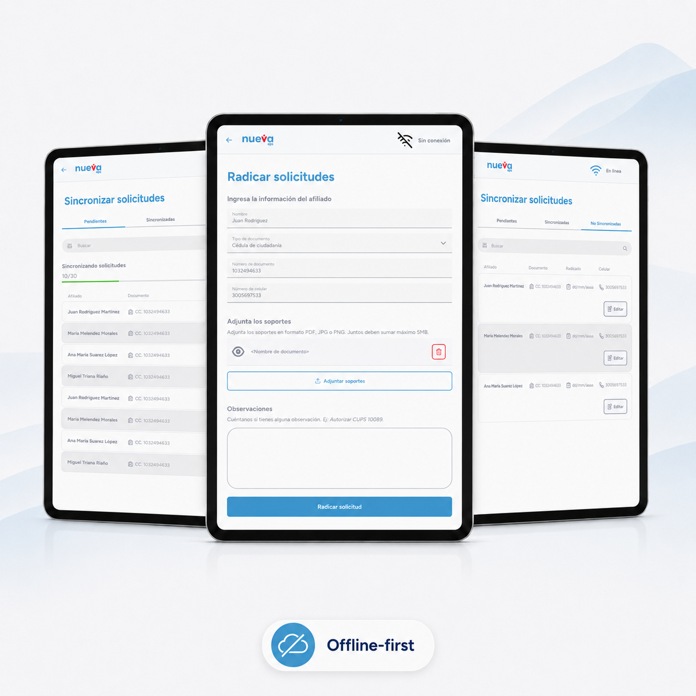

01
Field Tool For Rural

Field Tool For Rural
Healthcare Access
01
Outcomes
Supported 70,000+ patients in rural areas of Colombia
Reduced the risk of losing personal information and special category health data
See More